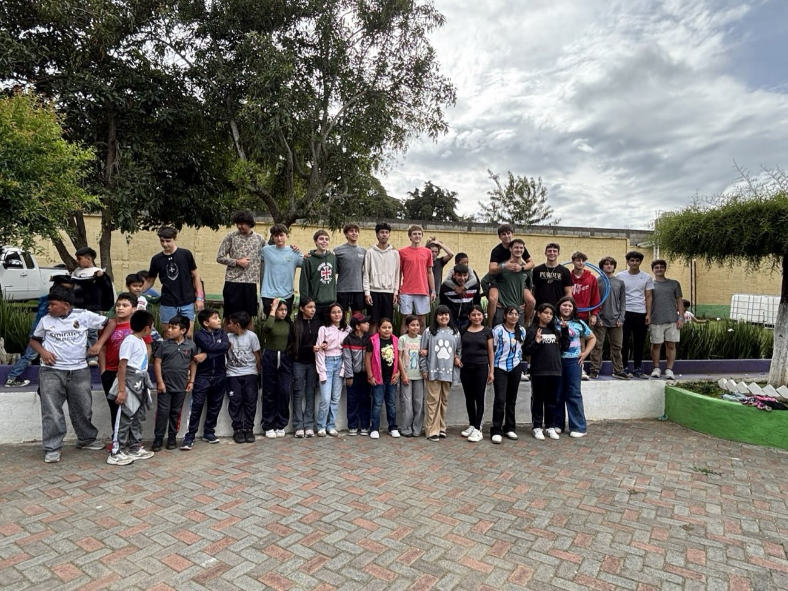

Places I have been featured, credited, or mentioned.
Guatemala Mission Trip ‐ July 2026

A Strake Jesuit mission trip with Orphan Outreach, built around cultural
exchange. We spent the week with the kids, playing games, talking, and
sharing our faith in Christ with them.
Trip reel on Instagram
Guatemala Mission Trip ‐ Group

Our Strake Jesuit group with the kids we spent the week with. We also spent a day in Antigua.
Trip post on Instagram